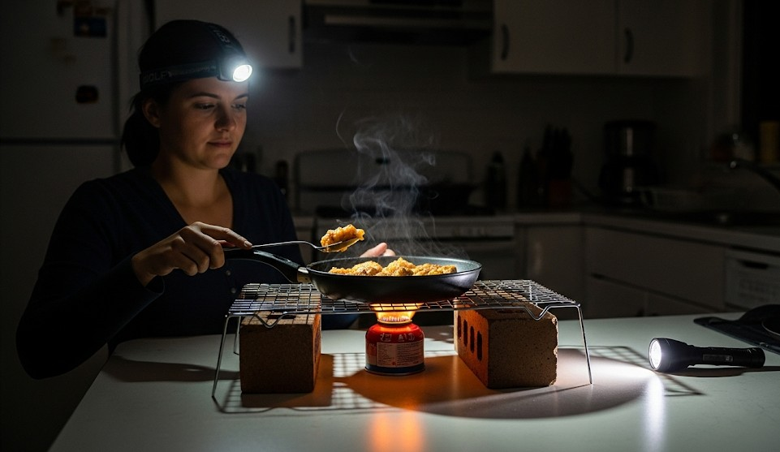

Blackout Cooking with Common Household Items
Objective
Cook safely during a power outage using minimal fuel and common kitchen items.
Quick Heat Sources
- Gas stove with match (ensure ventilation, CO alarm on batteries).
- Tea light + small pot for gentle warming (not for boiling).
- Charcoal grill outdoors only; never indoors/garages.
One‑Pot Meal Patterns
- Starch + protein + flavor: rice/couscous + beans/fish + oil/spices.
- No‑cook breakfast: oats soaked in hot water from thermos.
Fuel Discipline
- Boil first thing and store in thermos for day use.
- Choose quick‑cook foods; cut pieces smaller to reduce time.
Improvised Gear
- Wire rack over two bricks → stable pan support.
- Pot lid acts as a skillet cover for faster simmering.
Real Example
A family cooked couscous + chickpeas on a window‑adjacent gas flame with a battery CO alarm nearby, using a thermos to handle breakfast without re‑lighting.
Checklist
- Thermos, can opener
- Oil, salt, spices
- Fire extinguisher
Contingencies
- No open‑flame option → cold meals: peanut butter, canned fish, bars.
- Fridge thawing → cook meats first; keep fridge closed between uses.
After‑Action
Stock a “blackout pantry” bin with quick‑cook staples and rotate quarterly.
← Previous | All Articles | Next →